La maison de 1901
Rénovation complète d’une maison à Enghien-les-Bains
Enghien-les-Bains · Val-d’Oise (95)
Une maison de 1901 en secteur protégé, remise à neuf sans rien perdre de son cachet, avec la touche contemporaine que les propriétaires voulaient.
Avant / après
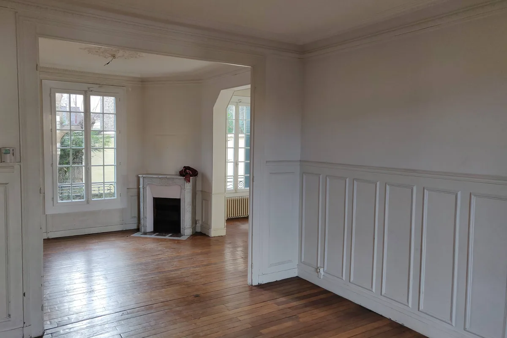

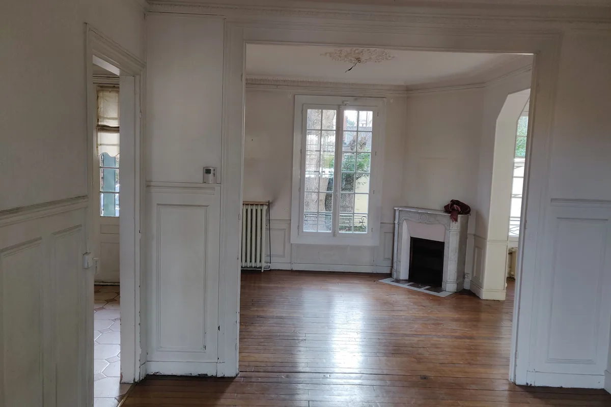
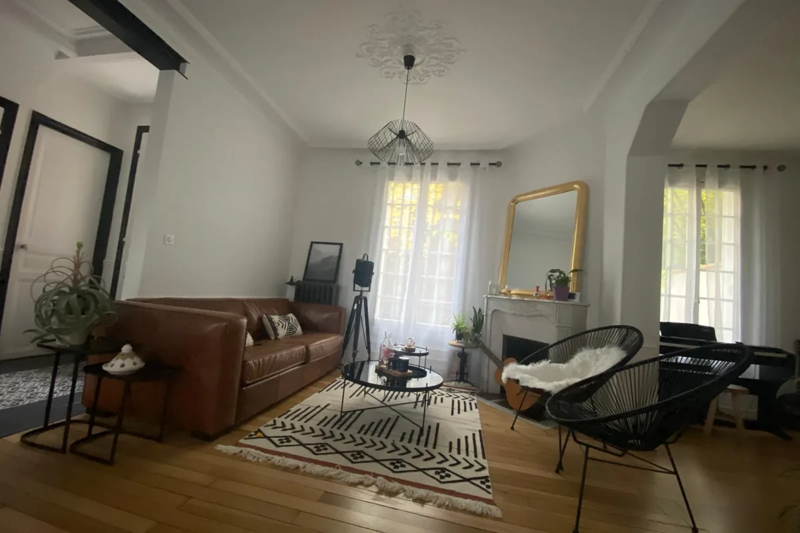
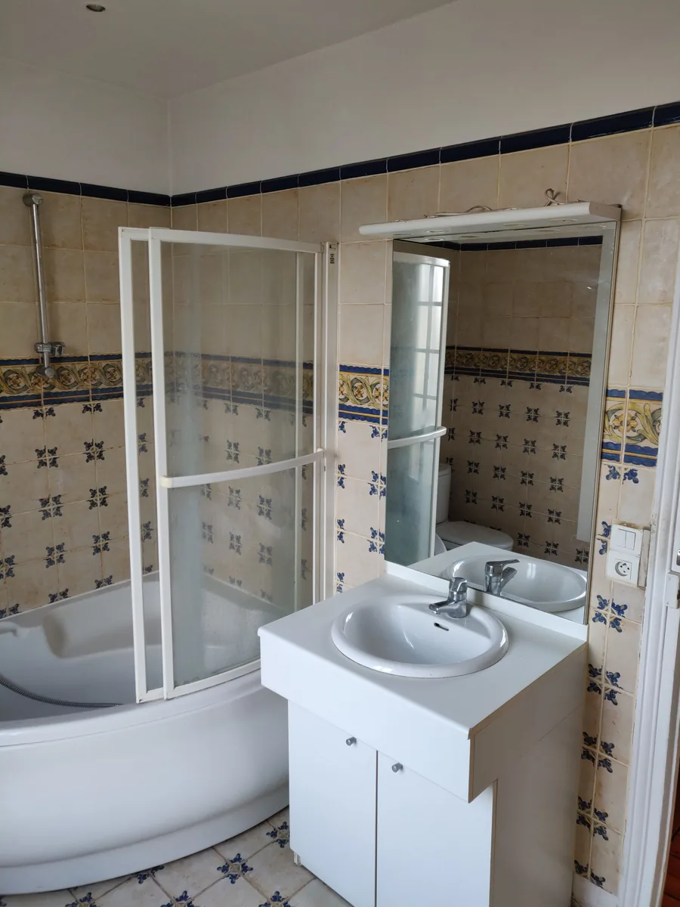
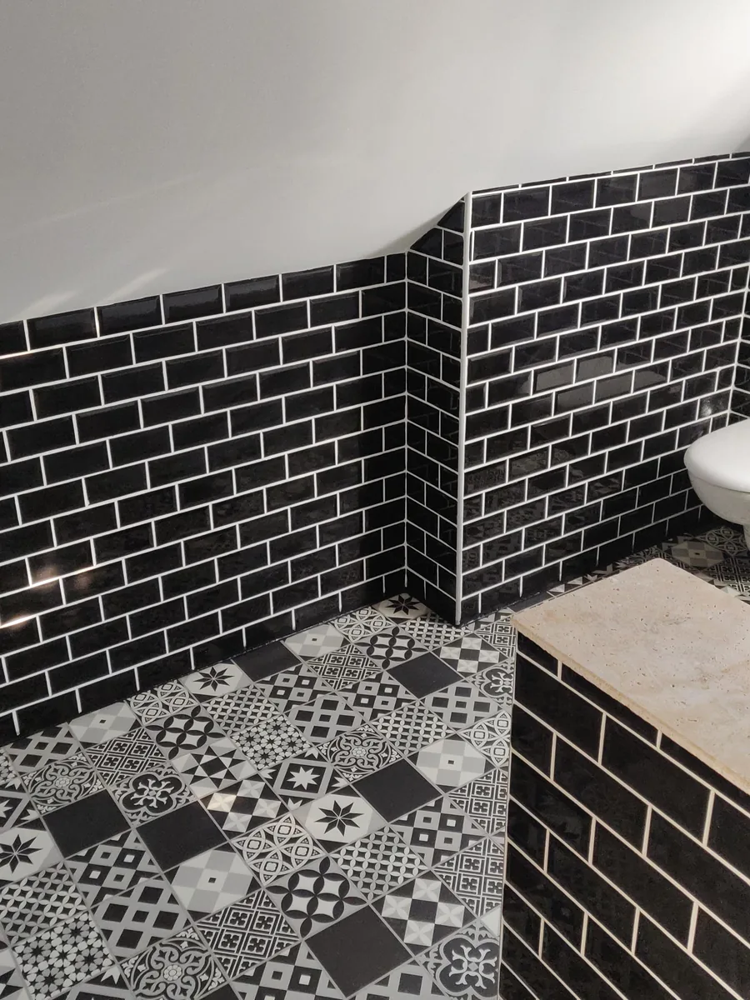
Le chantier
La maison date de 1901 et se situe en secteur soumis à l’avis de l’Architecte des Bâtiments de France. Deux conséquences immédiates : ce qui touche à l’extérieur est encadré, et ce qui fait le cachet du bâti (moulures, corniches, soubassements à panneaux, cheminées) mérite d’être traité comme un actif plutôt que comme une contrainte.
La demande des propriétaires était explicite : garder le charme de l’ancien, y ajouter une touche moderne. Nous avons proposé un registre industriel, parce qu’il dialogue avec le bâti ancien. Les poutres métalliques qui reprennent les charges après ouverture ne sont donc pas dissimulées : peintes en noir, elles deviennent la ligne contemporaine de la maison.
Le même raisonnement court dans toute la maison. Les carreaux de ciment marquent le passage vers la cuisine sans qu’une cloison soit nécessaire. La cuisine, en façades anthracite et plan de travail bois, s’ouvre sur la pièce de vie ; les moulures du plafond passent au-dessus sans interruption, parce que l’ouverture a été faite sous elles.
À l’extérieur, la terrasse en bois a été reprise et le jardin replanté. Pendant les travaux de maçonnerie, le platelage existant a été bâché sur toute sa surface : une terrasse qu’on ne protège pas est une terrasse qu’on refait.
Les métiers mobilisés
- Démolition et ouverture de murs porteurs
- Structure métallique
- Plâtrerie et doublage
- Menuiseries intérieures
- Électricité
- Plomberie
- Cuisine
- Revêtements de sol
- Peinture
- Terrasse et aménagement extérieur
Pendant les travaux
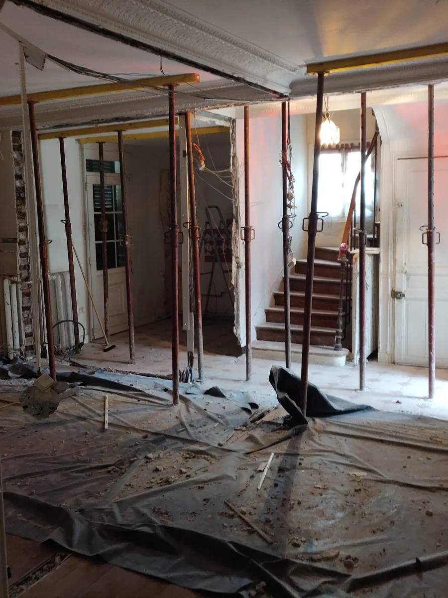
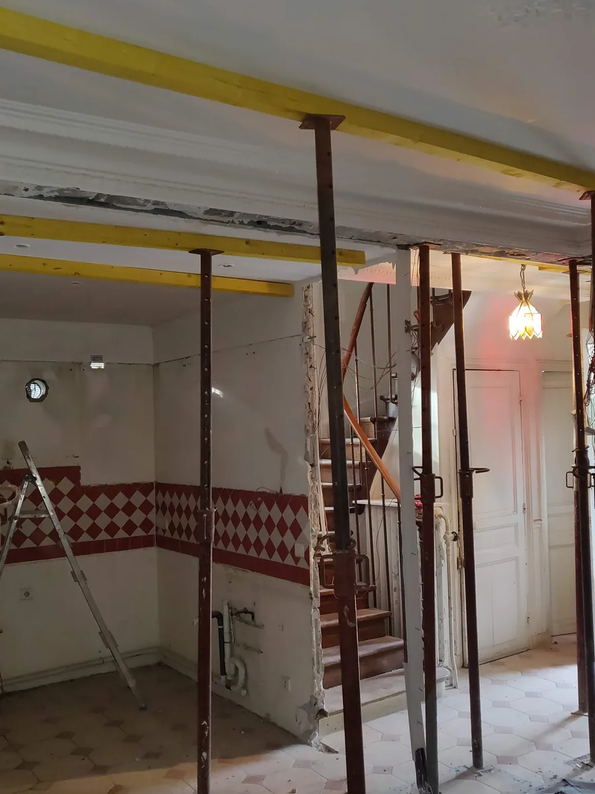
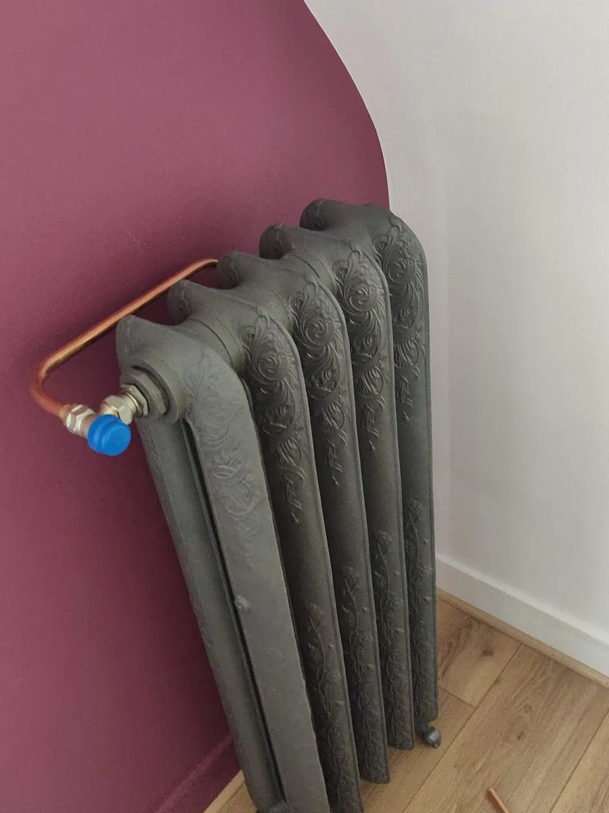
Le résultat

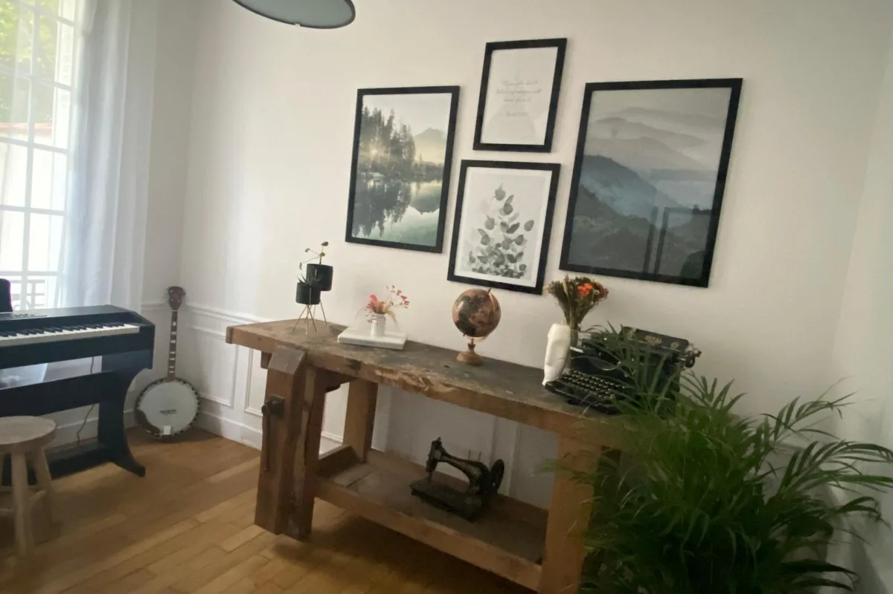
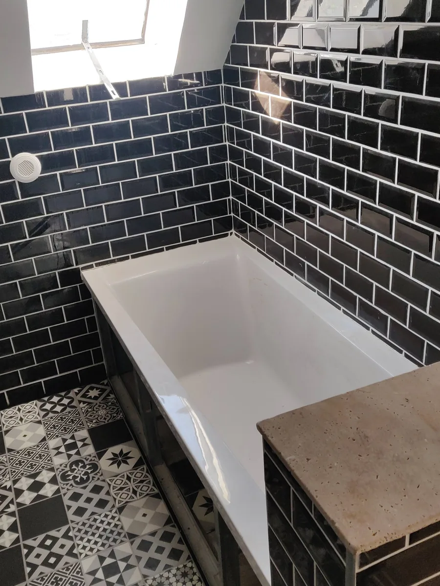
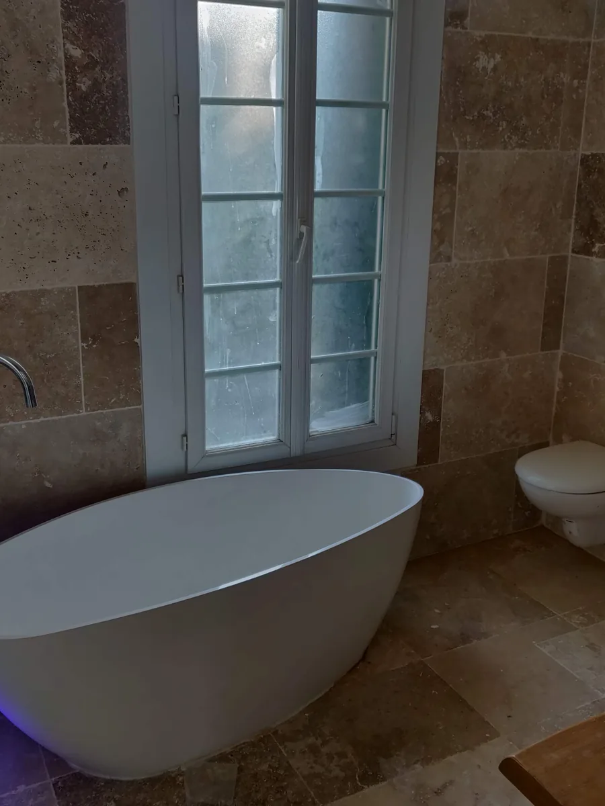
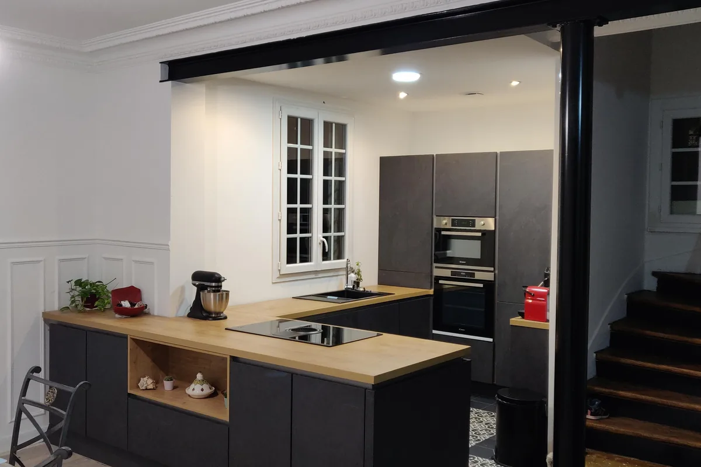
Voir d'autres chantiers
Un projet comparable ?
Expliquez-nous ce que vous souhaitez transformer. Nous revenons vers vous avec un périmètre et un prix définis avant de commencer.